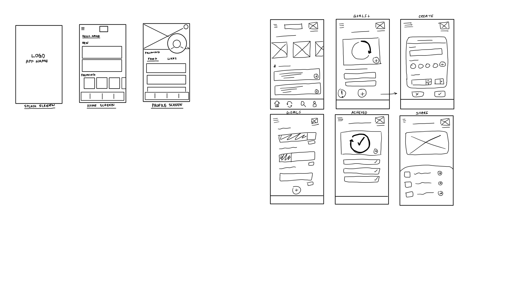
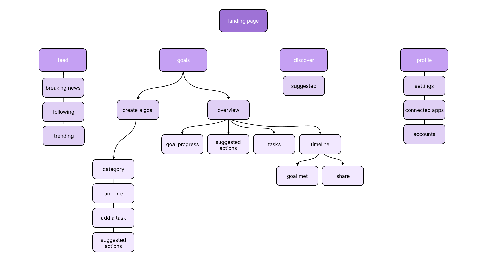
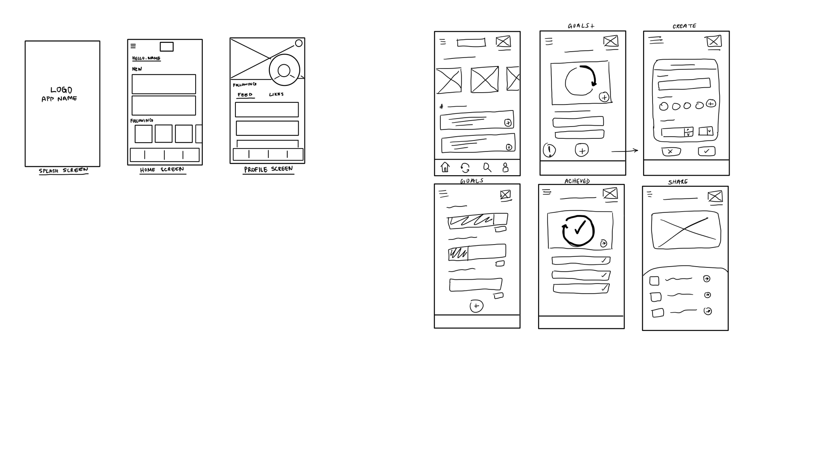
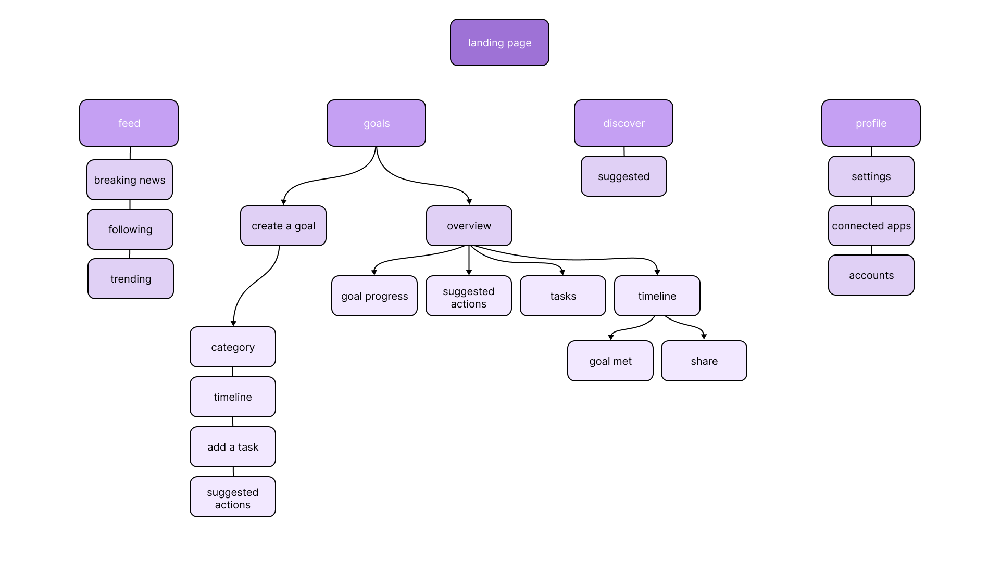

I worked on a team of two in a designathon where the theme was advocacy within sustainability. We created Greenr--a mobile app that empowers people to become actionable in their desire to help the environment and lead more sustainable lives. Through gamification of sustainability goals and a social media based news feed, users can stay informed and track their progress.

 



Greenr is targeted towards young adults who have a passion for sustainabiltiy but find it hard to commit to, or keep track of actions that help the cause. We conducted a survey amongst the other student participans in the designathon to gague what their sustainability goals and painpoints were. We decided that our mobile app should use both gamification and information to appeal to the demographic of young adults that can process data but also enjoy lesiure engagement.
The overall feel of the app is soft and natural, with greens and soft yellow. Sans-serif typography and minimal icons give a fresh, clean, and simple interface.

Outcome: Participating in a designathon was extremely rewarding. I learned how to work quickly, design with different users in mind, and adapt when faced with obstacles. Overall I would like to observe how the target demographic interacts with this prototype and what features they’d like to see included. With more time I would’ve loved to add a video sharing feature or a page for loctation based evironmental themed meetups.